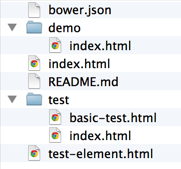
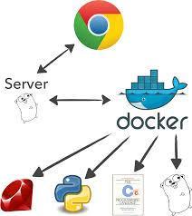

Introduccion Docker
Explicacion Docker
React como página de inicio contesta el "qué" bastante bien. Si me preguntan, defino React como un "motor de renderizado de la interfaz de usuario basada en JavaScript." Noten que me fui a "HTML" fuera de esa definición. Esto se debe a HTML es sólo uno de muchos posibles objetivos. También me dejó salir "navegador" porque se puede utilizar React en el servidor también. (Y espero que las aplicaciones nativas pronto.) La parte "motor" de mi definición me recuerda a la similitud con los motores de juego. Con React, al igual que con un motor de juego, sólo tiene que especificar cómo un estado de la aplicación dada se traduce a una vista determinada. Si algo cambia, no se cambia la vista. En su lugar, sólo se renderiza nuevamente y obtienes una nueva vista.
Este enfoque simple hace que todo un conjunto de problemas se aparten. Estamos ante una transición de vistas Backbone para React en puntos de vista, y no hay vuelta atrás en este punto. Con React, no hay complejidad extra de mantener su estado de la aplicación y la vista en sincronía. Sólo render, aclara, repite. Pueden construir fácilmente los componentes de interfaz de usuario completamente aislados, reutilizables, y componibles. vistas anidadas simplemente se convierten en una extensión natural de la manera React con sus propias obras. Si cambian las cosas, vistas refactorización es casi divertido!
Un pequeño ejercicio en estos ejemplos utilice jsFiddle , para que puedan verlos correr aquí en este post. Basta con hacer clic en la liga "Resultados" para ver el ejemplo tal y como aparecería en un navegador. Sigue el enlace "Editar en jsFiddle" si quieres crear en un ejemplo particular.
JSX no es un lenguaje de plantillas
Lo primero es darse cuenta de que JSX no es un lenguaje de plantillas. Si usted confunde con algo como manillares, que van a terminar pensando que es mucho ruido y pocas nueces. Lo que es peor, se romperá de manera misteriosa. JSX es simplemente una sintaxis JavaScript alternativo, aunque uno que es (al menos en la actualidad) específica para React.
El ejemplo anterior es identico a:
Espero sea de ayuda para conocer un poco de React JS
Polymer es una librería muy completa que nos ayuda a la creación de Web Components de una manera mas fácil y pensando siempre en crear en un ecosistema de componentes.
Para crear un Web Component (también conocido como elemento) con Polymer primero tienes que saber manejar un poco de bower ya que así será más fácil manejar las dependencias.
Partiendo de las explicaciones anteriores la instalacion de polymer utilizando bower y estableciendo el proyecto inicial.
Con lo que hemos descargado podemos generar nuestros propios elementos, pero Polymer ya tiene una buena cantidad de elementos propios de su core y ademas tiene elementos trabajados en base al estilo de ‘Material Design’ el nuevo paradigma de diseño que propuso google en su evento de desarrollo hace poco. Si queremos obtener los mismo tenemos que hacer lo siguiente:
Para usar polymer se tiene que hacer dos cosas: 1. Importar el core de polymer que es el archivo polymer.html 2. Para declarar el elemento se usa la etiqueta
Con esto ya tendríamos la plantilla básica para crear un elemento personalizado.
Pero una de las cosas buenas de polymer es la reutilización, por ejemplo podemos usar un elemento ya creado, para la creación de otro
Para este caso vemos que se usa el elemento para la obtención de datos que se usa al momento de crear el elemento
Ahora, crearemos un elemento para la creación de una tarjeta la cuál llamaremos card-person.html, para ver como se le agregan atributos a un elemento nuevo:
Estructura de aplicación recomendada
Los archivos que activarán el WebView deben estar dentro del proyecto src / main / activos de carpeta.
Perfecto para archivos web estáticas!
Dentro de la carpeta raiz, se recomienda crear una carpeta wwww para guardar su aplicación web. Esta carpeta es también donde las dependencias de elementos adecuados (p.ej. bower_components ) pueden ir.
El uso de Bower para instalar elementos
si no está familiarizado con Bower, ver la instalacion en el los primeros articulos .
Crear un bower.json archivo en src / / activos / www principal que indique sus dependencias elemento. A modo de ejemplo, vamos a tirar en todos los elementos de papel y del núcleo:
En src / / activos / www principal , crear bower.json :
{ "name" : "PolymerWebView" , ... "dependencies" : { "core-elements" : "Polymer/core-elements#^0.5.6" , "paper-elements" : "Polymer/paper-elements#^0.5.6" } }
En la www , ejecute para instalar y rellenar el bower_components carpeta.
Usando Las importaciones HTML Crear src / main / activos / www / elements.html , una importación de HTML que incluye todos los elementos de las importaciones va a utilizar su aplicación:
Introducción Así pues, usted desea publicar su primer elemento de polímero reutilizable? ¡Fantástico! Esta guía le guiará por el proceso.
Cuando haya terminado, tendrá que:
Un repositorio git local para su elemento, basado en el texto modelo oficial. Un publicada, versión Glorieta-instalable de su elemento en GitHub. Documentación y una demostración de funcionamiento de su elemento alojado en GitHub páginas. Esta guía asume que tiene git , Nodo y Bower instalados en el sistema, y que tiene una cuenta de GitHub puede utilizar para publicar sus elementos.
instalar PolyServe Debido a la forma HTML importa trabajos, se necesita un servidor web local para poner a prueba sus elementos.
PolyServe es un simple servidor web que le permite utilizar componentes locales Bower. Es muy bueno para probar los elementos durante el desarrollo. Instalarlo mediante MNP :
NPM instalar - g PolyServe
Descargar la semilla elemento repetitivo y descomprimirlo en su directorio de trabajo.
Cambiar el nombre del elemento y sus archivos en consecuencia. Por ejemplo, si el elemento se llama

Cuando la importación de otros componentes, siga los ejemplos de
Una buena manera de probar rápidamente la cordura es su componente para acceder a su archivo de demostración utilizando PolyServe:
$ PolyServe
A partir PolyServe en el puerto 8080
de la porción componentes de bower_components
Archivos en este directorio están disponibles en localhost : 8080 / componentes /
El procedimiento de instalación por excelencia es bajo ambientes Ubuntu, por lo tanto será el que explicaremos aquí. En este caso particular ya que no poseo un computador con Linux, usaremos una instancia Ubuntu Precise 64bit de Vagrant, sin embargo no seguiremos las instrucciones proporcionadas por la página de Docker para la instalación especifica por Vagrant para hacer el procedimiento lo más parecido a lo nativo en un ambiente Ubuntu.
Al momento de este escrito, Docker no soporta sistemas x86.
Debido a que Docker funciona mejor con el kernel 3.8 veamos si nuestra instancia aplica para este propósito
$ uname -a
Linux precise64 3.2.0-23-generic...
Ya que esta versión de Ubuntu viene con la 3.2 debemos actualizarlo, así que inicialmente haremos:
$ sudo apt-get install linux-image-generic-lts-raring linux-headers-generic-lts-raring
Luego procedemos a reiniciar el sistema
$ sudo reboot
Probemos que en efecto el kernel fue actualizado:
$ uname -a
Linux precise64 3.8.0-30-generic
Bien, ahora agreguemos el repositorio de Docker y sus llaves lista local de fuentes y llavero local:
$ sudo sh -c "curl https://get.docker.io/gpg | apt-key add -"
$ sudo sh -c "echo deb https://get.docker.io/ubuntu docker main > /etc/apt/sources.list.d/docker.list"...
Volvemos a refrescar la lista de fuentes e instalamos el paquete de Docker:
$ sudo apt-get update
$ sudo apt-get install lxc-docker
Verifiquemos que fue instalado:
$ docker -v
Docker version 0.6.1, build 5105263
Docker es un marco de código abierto que proporciona un tipo más ligero de la virtualización, el uso de contenedores de Linux en lugar de las máquinas virtuales.Construido sobre las distribuciones de Linux tradicionales tales como Red Hat Enterprise Linux y Ubuntu, Docker permite empaquetar aplicaciones y servicios como imágenes que se ejecutan en sus propios recipientes portátiles y pueden moverse entre físicos, virtuales y de nube fundaciones sin necesidad de ninguna modificación.Si se construye una imagen Docker en un ordenador portátil Ubuntu o servidor físico, puede ejecutarlo en cualquier Linux compatible, en cualquier lugar.  De esta manera, Docker permite un alto grado de portabilidad de aplicaciones y agilidad, y se presta a aplicaciones altamente escalables.Sin embargo, la naturaleza de acoplable también se inclina hacia ejecutando un solo servicio o aplicación por contenedor, en lugar de una colección de procesos, tales como una pila LAMP.Eso es posible, pero vamos a detallar aquí el uso más común, que es para un solo proceso o servicio. Por lo tanto, en esta guía, vamos a instalar el servidor Web Apache en un recipiente Docker e investigamos cómo Docker opera a lo largo del camino. Conferencia por Rob Dodson Polymer + Firebase 🔥Check mi charla de #PolymerSummit para aprender cómo construir en tiempo real, aplicaciones de usuario autenticado 🚀 ¡No te pierdas el video de +Seba Rodriguez en donde comparte la presentación Mobile
Apps y sus desafíos! #GDSSantiago Ingresamos a nodejs.org, damos al botón “Install” e instalamos el archivo descargado (el típico siguiente, siguiente, finish).
Ahora sigue instalar stylus, abrimos la terminal de windows (cmd) y escribimos:
Código :
npm –g install stylus
npm: llamamos a la paquetería de node.js
-g: decimos que lo instalaremos en global para todo el pc
Install: instalar
Stylus: paqueteria?
Herencia en HTML ? con Polymer no sólo es posible con componentes Web , es super útil para trabajar con formas y accesibilidad . Polymer 0.8 documentation
(https://www.polymer-project.org/0.8/)
Polyserve
(https://github.com/polymerlabs/polyserve)
En esta ocasión tratara para los que desean aprender a programar en Python. Ya que en https://hedwigquiron.github.io/HEDWIG/ apoyamos todos los recursos gratuitos para los desarrolladores, lo consideramos muy interesante para que todos los principiantes alcancen su nivel básico y se inicien en el mundo de la programación en un lenguaje muy potente en el mercado laboral. Lo primero es una guía para principiantes que pueden encontrar en el siguiente enlace:(http://learnpythonthehardway.org/book), ahí tienen todo bien estructurado con muchos ejemplos que son pieza fundamental cuando se programa. Luego tenemos otro recurso creado en Udemy y que podrás visitar desde el siguiente enlace: (https://blog.udemy.com/python-tutorial). Ahí tenemos una buena cantidad de información desde estructuras simples hasta las más complejas de repetición. Para aprender mas les dejamos un excelente tutorial elaborado por Arturo Jamaica Cambiar el tamaño de los mapas de bits es una técnica fundamental para Desarrolladores de Android que se preocupan por el rendimiento y la presión de memoria. Y como tal, Android ofrece un conjunto de APIs para que sea mucho más fácil .... pero es demasiado confuso cómo funcionan. + Colt McAnlis da un resumen de las opciones, para que puedas encontrar el API adecuado para sus necesidades exactas. TECH: Texas Conferencia JavaScript | TXJS 2015 · Videos de la conferencia de un día · por TXJS #talks. Cambiar el tamaño de los mapas de bits es una técnica fundamental para Desarrolladores de Android que se preocupan por el rendimiento y la presión de memoria. Y como tal, Android ofrece un conjunto de APIs para que sea mucho más fácil .... pero es demasiado confuso cómo funcionan. + Colt McAnlis da un resumen de las opciones, para que puedas encontrar el API adecuado para sus necesidades exactas. Felipe Hoffa, Developer Advocate en Google, nos revela en una entrevista lo que hay que saber sobre Google BigQuery. 1. Consultas más rápidas: La bajada de los precios de almacenamiento hace que hoy en día se tenga mucha más información que antes. Esto significa más datos que analizar. Pero si paso horas o días para hacer una consulta, avanzar es casi imposible. Google BigQuery permite que las consultas que antes tomaban un día ahora demoren 20 segundos, podemos consultar y analizar este tipo de datos para obtener conocimientos de ellos. Una vez que obtengo el conocimiento, el siguiente paso es aplicar esta información a mi proyecto o startup. 2. Lenguaje SQL: A diferencia de otras herramientas de Big Data que requieren muchos conocimientos, BigQuery es un producto enfocado a desarrolladores y el lenguaje que utiliza es el SQL. Además hay capas de otros productos que se han creado para hacer más fácil su uso. Muchas personas pueden estar ocupando BigQuery sin darse cuenta. 3. Gestión en la nube: Big Data representa tener un manejo muy grande de datos y una capacidad de cómputo muy grande, difícil de administrar. Para gestionar estos datos es necesario contar con la nube, la de Google por ejemplo, dónde se resuelvan cuáles son los datos y qué consultas se quieren hacer. 4. Alta velocidad: ¿Quieres calcular cuántas visitas tiene Wikipedia al mes? BigQuery permite calcularlo escribiendo tres líneas de código SQL para sumar 6 mil millones de números en 5 segundos. 5. Herramienta abierta: Con BigQuery los usuarios pueden analizar hasta 1 TB de información gratis cada mes. Y por último, Felipe nos da tres consejos claves para usar BigQuery:
Antes, el costo de acumular información era muy alto, pero hoy es mucho más valioso guardar datos en vez de eliminarlos.
Guárdenlos en un lugar seguro en la nube. Sean siempre curiosos, hagan preguntas y analicen sus decisiones en base a los datos.
Si se han quedado con ganas de saber más sobre BigQuery, aquí pueden ver paso a paso cómo Felipe Hoffa y Nick Bortolotti analizan Big Data La razón de existencia de la latencia es que nuestro sonido tiene un camino largo que recorrer, y el sistema operativo que utilicemos también juega un papel importante en ese sentido. Por ejemplo, muchos artistas utilizan ordenadores Mac porque su latencia en sonido es muy baja de por sí (aunque la latencia cero sea un mito), lo cual hace su uso ideal para directos y espectáculos en comparación a ordenadores con Windows, aunque tener claro una cosa: siempre vamos a tener latencia, por muy baja que sea, porque estamos metiendo pasos extra al introducir un ordenador en la ecuación. El truco es que nuestro oído está cómodo con latencias que rondan los 10 milisegundos: a partir de los 15 milisegundos empezaremos a notar que la señal tiene algo de retardo. La biblioteca de Polymer proporciona un conjunto de características para la creación de elementos personalizados. Estas características están diseñadas para hacer más fácil y más rápido para hacer elementos personalizados que funcionan como elementos DOM estándar. Con un elemento DOM estándar, se podría esperar: 1.-Puedes crearlo usando un constructor o document.createElement. 2.-Usted puede configurarlo usando atributos o propiedades. 3.-Puede tener algún DOM interna que se crea para cada instancia. 4.-Responde a la propiedad y el atributo de cambios (por ejemplo, rellenar los datos en el DOM, o disparar un evento). 5.-Tiene un poco de estilo por defecto y puede ser de estilo desde el exterior. 6.-Puede proporcionar métodos para que pueda manipular su estado interno.Desarrollar y probar
Añadir la lógica específica de su nuevo elemento y verificar su funcionalidad.
¿Cómo instalo docker?
¿Cómo empezar con Docker?
End to End with Polymer (The Polymer Summit 2015).
Mobile Apps y sus Desafíos.
Instalar Node.js en Windows
Instalar Stylus en Windows
Heredando de elementos HTML nativos con componentes Web.
Aprender a programar en python.
Reusing Bitmaps.
Texas Conferencia JavaScript.
Reusing Bitmaps.
Google BigQuery.
Latencia de audio: tamaños de búfer.
Introduccion a Polymer.
Explicacion Docker
Explicacion De Google Developers
( 100 Días de Google Dev ).
Felipe Hoffa, Developer Advocate en Google.
Colt McAnlis, 100 días de Google Dev, Episodio 60/100 .
Simon Swain.
Arturo Jamaica.
Polycast.
Desarrolladores Google.
Desarrolladores Google.
Docker.